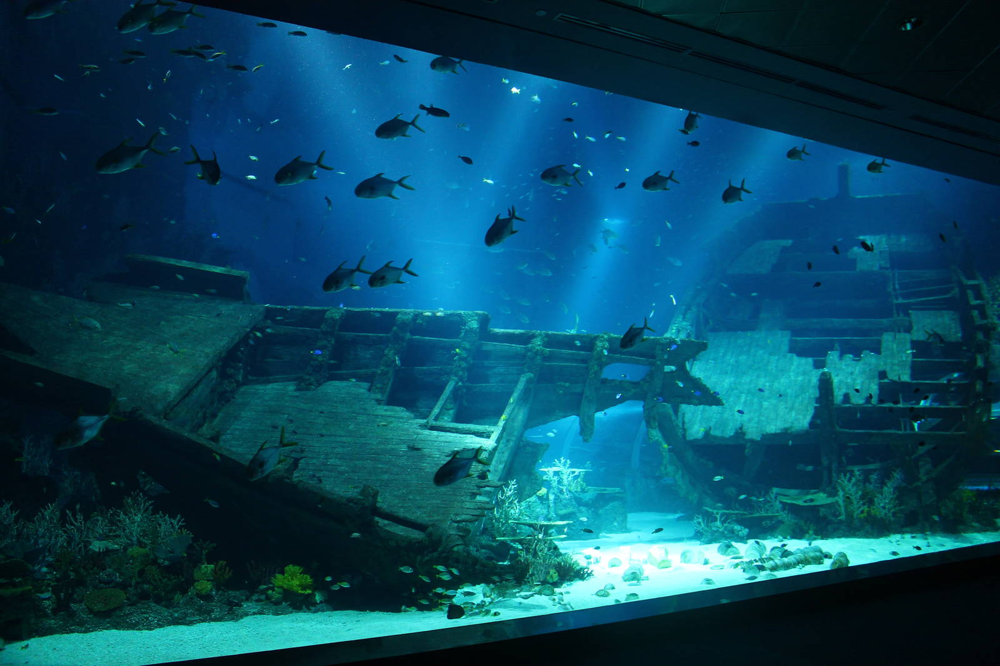

Tentang SEA Aquarium Singapore
SEA Aquarium Singapore Jelajahi kemegahan kerajaan laut di South East Asia (S.E.A) Aquarium Singapore yang merupakan salah satu akuarium terbesar di dunia. Ini adalah negeri ajaib bawah air yang menampilkan sekitar 100.000 makhluk air berbeda yang berasal dari samudra dan lautan utama dunia. Anda dapat menemukan sejumlah besar ikan eksotis, hiu raksasa, dan makhluk laut lainnya yang tersebar di delapan zona berbeda di 45 habitat berbeda. Akuarium ini juga menampung spesies langka dan terancam punah seperti Bowmouth Guitarfish, Moray Eel, dan Blue Tang. Anda dapat melihat karang unik seperti Bubble Coral, Sun Coral, dan Brain Coral serta mempelajari lebih lanjut tentang terumbu karang dan pentingnya terumbu karang dalam ekosistem laut.
SEA Aquarium Sentosa telah menciptakan kembali beberapa lautan dan samudera seperti Laut Laccadive, Selat Malaka, dan Laut Jawa serta memelihara makhluk laut di habitat aslinya. Nikmati berjalan-jalan singkat melalui Open Ocean Habitat dan Shark Sea Habitat dan kagumi dengan takjub melihat pari manta besar dan hiu yang melayang di atas kepala Anda. Akuarium juga memfasilitasi program interaktif, sesi pemberian makan, pertemuan dekat dengan hewan air untuk mempromosikan pembelajaran mendalam tentang kehidupan laut dan cara melindungi mereka. Ikut serta dalam sesi memberi makan dan saksikan para penyelam menyelam jauh ke dalam lautan dan memberi makan makhluk laut.
Zona di SEA Aquarium Singapore
Banyaknya biota laut dibagi dan dikelompokkan menjadi delapan zona berbeda di S.E.A Aquarium Singapore yang menampilkan 50 habitat. Temukan segala sesuatu tentang dunia bawah laut dan pahami kehidupan hewan air dan cara mereka bertahan hidup dengan mengamati berbagai spesies makhluk laut. Anda dapat menikmati berbagai macam ikan dan karang yang umum ditemukan di kawasan Indo-Pasifik.

Shipwraked

Open Habitat Ocean

Apex Predators of the Sea
Fasilitas SEA Aquarium Singapore
- ATM
- Restauran
- Kursi Roda
- Toko Sovenir
- Toilet
- Parkir Mobil
- Parkir Motor
Informasi Penting
Jam Operasional
| Senin | 10.00 - 17.00 |
| Selasa | 10.00 - 17.00 |
| Rabu | Tutup |
| Kamis | Tutup |
| Jumat | 10.00 - 17.00 |
| Sabtu | 09.00 - 17.00 |
| Minggu | 09.00 - 17.00 |
Lokasi
-8 Sentosa Gateway, Sentosa Island, Singapore 098269
Cara Menjangkau
1. Dengan Mobil: Berkendara ke Sentosa Gateway dan parkir mobil Anda di B1 East di Tempat Parkir Resorts World Sentosa. Ikuti petunjuk di Direktori Peta Tempat Parkir untuk mencapai SEA Aquarium di Level 1.
2. Dengan Bus: Naik bus 123, 188R, 963R, NR1 atau NR6 dan mencapai halte bus Resorts World Sentosa 14519. Naik eskalator dan masuk ke Maritime Experiential Museum di mana SEA Aquarium berada.
3. Dengan MRT: Naik MRT dari stasiun terdekat ke Stasiun MRT HarbourFront dari sana Anda dapat mencapai SEA Aquarium dengan monorel, jalan kaki, atau kereta gantung.